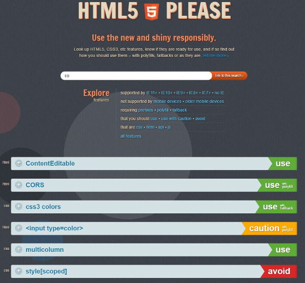

The JavaScript ecosystem and the modern Web
Réseau ARAMIS - 23/03/2017
Who am I?
Developer, architect & technical director of unit "Ministries and Administrations" at WordlineThe evolution of the Web
Usage
read-only & static
 read-write & dynamic
read-write & dynamic

User generated content

Web application architectures
 New web application architectures and impacts for enterprises
New web application architectures and impacts for enterprises
The mobile revolution


Responsive Web

Web browsers war

Web standards
Evolution of standards

HTML

The history of html5
CSS

JavaScript
JavaScript: the language ECMAScript: the standard
Browser support

HTML5 Please
Can I Use?

http://caniuse.com/
Tools
We need tools

What kind of tool?
- Shim: Normalize browser API
- Polyfill: Conditional implementation of missing browser features
- Library: Set of reusable features / functions / components
- Micro library: A library dedicated to a single feature
- Framework: Set of structured patterns and behaviours that are part of a general programming model
Evolution
JavaScript Fatigue

JavaScript Fatigue Fatigue
Javascript fatigue fatiguePolyfills: cross browser compatibility
Polyfills
A multitude of dedicated micro libraries, mostly composed of few functions implementing a feature on engines that do not yet support that feature. https://developer.mozilla.org/en-US/docs/Web/JavaScript/Reference
https://developer.mozilla.org/en-US/docs/Web/JavaScript/Reference

Modernizr
feature detection: executes code / polyfill based on the actual capabilities of the browser
if (Modernizr.awesomeNewFeature) {
showOffAwesomeNewFeature();
} else {
getTheOldLameExperience();
}
npm install -g modernizrAutoprefixer
dealing with CSS vendor prefixes https://github.com/postcss/autoprefixer
source
https://github.com/postcss/autoprefixer
sourcea {
transition: transform 1s
}
a {
-webkit-transition: -webkit-transform 1s;
transition: -ms-transform 1s;
transition: transform 1s
}Libraries: APIs & Components
General Libraries
Large libraries extending JavaScript APIs and functions to enrich & standardize the programming model. Unlike frameworks, they are not opinionated about your app's design.
- Prototype: DOM manipulation & events, object-oriented API, AJAX requests. Lost the game.
- jQuery: DOM manipulation & events, AJAX requests, utility functions, cross browser maganement.
- Underscore.js & lodash: both libraries provide hundred of utility functions to extend the basic JavaScript API such as map, filter, reduce
- RxJS: extends the API with reactive programming utilities using Observables
- ...
jQuery
The incontestable leaderDOM Manipulation:
// Changing the HTML of an element.
$( "#myDiv p:first" ).html( "New first paragraph!" );
// Manipulating a single attribute.
$( "#myDiv a:first" ).attr( "href", "newDestination.html" );var hiddenBox = $( "#banner-message" );
$( "#button-container button" ).on( "click", function( event ) {
hiddenBox.show();
});$.ajax({
url: "/api/getWeather",
data: {
zipcode: 97201
},
success: function( result ) {
$( "#weather-temp" ).html( "" + result + " degrees" );
}
});Do I still need jQuery?
"jQuery has helped tremendously to move the Web forward" Today's critics:- it is fat (270 kB / 85 kB)
- it is not enough modular (all in one)
- it is slow (especially on mobile)
- it prevent learning JavaScript properly
- it leads to bad code and practices
- you do not need everything
- you do not need it anymore

lodash
"A modern JavaScript utility library delivering modularity, performance & extras."- Overall leader for utility libs
- Relatively light
- In the browser or via npm
<script src="lodash.js">$ npm i -g npm
$ npm i --save lodash// Load the full build.
var _ = require('lodash');
// Load the core build.
var _ = require('lodash/core');
// Load method categories.
var array = require('lodash/array');
// Cherry-pick methods.
var at = require('lodash/at');_.chunk(['a', 'b', 'c', 'd'], 2);
// => [['a', 'b'], ['c', 'd']]_.forEach([1, 2], function(value) {
console.log(value);
});
// => Logs `1` then `2`._.gt(3, 1);
// => true_.max([4, 2, 8, 6]);
// => 8_.random(0, 5);
// => an integer between 0 and 5_.has({ 'a': { 'b': 2 }}, 'a');
// => true_.camelCase('Foo Bar');
// => 'fooBar'RxJS
"Think of RxJS as Lodash for events."- For reactive & functional programming
- Events oriented
- Observer / Observable patterns
- Subscriptions
- Collections & iterators
- State management, purity
var button = document.querySelector('button');
button.addEventListener('click', () => console.log('Clicked!'));var button = document.querySelector('button');
Rx.Observable.fromEvent(button, 'click')
.subscribe(() => console.log('Clicked!'));var button = document.querySelector('button');
Rx.Observable.fromEvent(button, 'click')
.scan(count => count + 1, 0)
.subscribe(count => console.log(`Clicked ${count} times`));var button = document.querySelector('button');
Rx.Observable.fromEvent(button, 'click')
.throttleTime(1000)
.map(event => event.clientX)
.scan((count, clientX) => count + clientX, 0)
.subscribe(count => console.log(count));var observer = {
next: x => console.log('Observer got a next value: ' + x),
error: err => console.error('Observer got an error: ' + err),
complete: () => console.log('Observer got a complete notification')
};UI Components
GUI widgets: Data Grids, Tree Views, Forms, Sliders, Calendars, etc.- Yui: catalog of HTML, JavaScript and HTML components. Discontinued since 2014.
- jQuery UI: "curated set of UI interactions, effects, widgets, and themes built on top of jQuery"
- Bootstrap, Foundation & Materialize: CSS frameworks with JavaScript UI components
- Single UI components: toastr, select2, pickadate, etc.
- ...
Jquery UI
- Catalog of Interactions, Widgets, Effects
- Configuration via options
- Depends on jQuery core
- All in one but you can make custom builds
- Via CDN, bower, npm
- 500 kB / 250 kB
https://jqueryui.com


$(function() {
$("#datepicker").datepicker();
});
Date:
Bootstrap
- CSS Framework
- JavaScript UI plugins & components
- Configuration via options
- Depends on jQuery core
- Plugins can be included all at once or individually
- Via CDN, bower, npm (preprocessors)
- 37 kB (minified)
- Bootstrap is the leader but Foundation is equivalent.


$('.dropdown-toggle').dropdown();
Single UI components
toastr is a Javascript library for non-blocking notifications
customizable select box with support for searching, tagging, infinite scrolling, ...
 And many, many others...
And many, many others...
Specialized Libraries
- Moment.js & Moment Timezone: Libraries for date, time and timezone manipulation, comparison, parsing, displaying, etc.
- D3.js: Library for building interactive data visualization components based on documents, bubble charts, activity calendar, maps, words clouds, etc.
- Immutable.js: Facebook library to create and manipulate immutable data structures.
- PDF.js: Mozilla library to parse and render pdf files.
- ...
Moment.js
Moment.js is the JavaScript reference library for date time manipulations. Moment.js is an all in one library (without locales, 20 kB minified and gzipped). It is higly configurable and extensible via plugins. Locales can be included individually with bundlers / build tools.- Format dates:
- Relative time:
- Calendar:
- Locales:
moment().format('MMMM Do YYYY, h:mm:ss a'); // March 10th 2017, 12:45:16 ammoment("20111031", "YYYYMMDD").fromNow(); // 5 years agomoment().subtract(6, 'days').calendar(); // Last Saturday at 00:58moment.locale(); // fr
moment().format('LL'); // 10 mars 2017D3.js
D3.js is a library for manipulating documents based on data. It uses HTML, SVG & CSS to display documents as interactive data visualization such as graphs, trees, maps, clouds, histograms, etc.
Micro libraries

http://microjs.com
- Thousands of micro libraries
- Lightweight
- Single purpose
- Extreme modularity
- Full control of the js size
- Popularity based on Github stars
Micro libraries: the leftpad example
leftpad, a library padding out the lefthand-side of strings with zeroes or spaces was unpublished from npm due to legal issues, breaking the Internet- 11 lines of code
- ~0.5 KB
- 3M downloads a month
- thousands of broken builds
Manage libraries

- Thousands of libraries and utilities
- Different size and weight
- Many configuration options, combinaisons, versions, etc.
- No or very little help to structure / organize project / code
- How to choose the right ones?
- How to deal with potential conflicts?
- ...
Frameworks: more structured code
Library vs Framework
A library is essentially a set of functions that you can call, these days usually organized into classes. Each call does some work and returns control to the client.A framework embodies some abstract design, with more behavior built in. In order to use it you need to insert your behavior into various places in the framework either by subclassing or by plugging in your own classes.
Martin Fowler - inversionOfControl
- Inversion of Control
- Frameworks? Libraries? Both, or none? — My honest opinion
- Frameworks vs libraries
- What's the difference between a library and a framework?
A framework brings structure, opinion, design choices, philosophy where a library provides utilities & tooling.
CSS Frameworks
- Mobile first: responsive design, media queries.
- Browser compatibility.
- Structuring grid system based on Flexbox.
- Hundred of CSS base styles & classes.
- CSS components: buttons, tabs, navigation, panels, badges, etc.
- Strong impact on CSS and HTML design & structure
- All in one distribution or custom builds.
- Preprocessor distributions (Sass, Less).
- Very popular, very criticized.
- Tens of other micro CSS frameworks.

Bootstrap Grid system
- Based on Flexbox
- Rows and Columns
- 12 columns layout
- Mobile first & responsive
- Specific CSS & HTML structure
- Using Sass mixins or predefined classes
- Reordering (push / pull)
- Customizing (offset, gutter)
- Nesting
- ...
Desktop:
 Mobile:
Mobile:
Mobile:
.col .col-md-8
.col-6 .col-md-4
.col-6 .col-md-4
.col-6 .col-md-4
.col-6 .col-md-4
.col-6
.col-6
Bootstrap components
- Alerts
- Badges
- Breadcrumbs
- Buttons
- Dropdowns
- Forms
- Groups
- Modals
- Navbars
- Pagination
- Progress
- Tooltips
- ...


JavaScript Frameworks: Why?
Good for large dynamic webapps, not suitable for document oriented websites.Take advantage of the work of great people & communities
Philosophy
- Focus on businesss
- Efficiency, developer productivity
- Cost (especially if open source)
- Don't reinvent the wheel
- Opinionations, idioms and programming model
- Conventions and best practices
- Better scalling on large apps, multiple teams
- Safety & Quality
- Governance and maintenance
- Need to be learnt
- Managing boilerplate
- Routing, managing URLs
- Fetching, saving data & APIs
- Advanced programming APIs
- Presenting data
- User interactions, data binding
- Reusable components
- Tooling, configuration & deployment
- Security checks & best practices
- Browser compatibility
- ...
javaScript Frameworks: How to choose?
TLDR; Don't know. At the end, it's a matter of opinion, taste, needs and context
Disclamer: I personaly am a big fan of ember.js
- JavaScript framework: making the right choice
- JavaScript framework comparison
- JavaScript frameworks: to use or not to use?
- 6 best JavaScript frameworks to learn in 2016
- Best Javascript frameworks
- 5 best JavaScript frameworks in 2017
- JavaScript Frameworks, why and when to use them
- Comparing Hot JavaScript Frameworks
JavaScript Frameworks
- Moderately opinionated
- Light conventions
- Steep learning curve
- Components oriented
- Dependency injection
- No built-in store
- Router as first class citizen
- Full HTML templates
- A little logic inside templated
- Created and supported by Google
- Most opinionated
- Conventions over configuration
- Steep learning curve
- Components oriented
- Dependency injection
- Fetching via ember-data
- Router as first class citizen
- Logic-less templates via glimmer / handlebars
- Created and supported by OSS
- Strong support of LinkedIn (Microsoft)
- Often presented more as a library
- Components oriented
- Less opinionated
- Focus on presenting / rendering
- Templates inside JS via JSX
- Introduced Virtual DOM
- Use Redux / Flux for more idomatic solution
- Use Director / react-router for routing
- Created & supported by Facebook
Angular2: Routing
// app/route.js
import { TodoListComponent } from './components/todo-list/todo-list.component';
export let routes = [
{ path: '', component: TodoListComponent, pathMatch: 'full' },
{ path: ':status', component: TodoListComponent }
];
// app/components/todo-list/todo-list.component.js
import { TodoStoreService } from '../../services/todo-store.service';
import template from './todo-list.template.html';
@Component({
selector: 'todo-list',
template: template
})
export class TodoListComponent {
constructor(todoStore: TodoStoreService, route: ActivatedRoute) {
this._todoStore = todoStore;
this._route = route;
this._currentStatus = '';
}
ngOnInit() {
this._route.params
.map(params => params.status).subscribe((status) => { this._currentStatus = status; });
}
...
}
Ember: Routing
// app/router.js
import Ember from 'ember';
import config from './config/environment';
const Router = Ember.Router.extend({
location: config.locationType,
rootURL: config.rootURL
});
Router.map(function () {
this.route('active');
this.route('completed');
});
export default Router;
// app/routes.application.js
import Ember from 'ember';
export default Ember.Route.extend({
repo: Ember.inject.service(),
model() {
return this.get('repo').findAll();
}
});
React: Routing (with Director)
// js/app.jsx
var app = app || {};
(function () {
'use strict';
app.ALL_TODOS = 'all';
app.ACTIVE_TODOS = 'active';
app.COMPLETED_TODOS = 'completed';
var TodoApp = React.createClass({
getInitialState: function () {
return {
nowShowing: app.ALL_TODOS,
editing: null,
newTodo: ''
};
},
componentDidMount: function () {
var setState = this.setState;
var router = Router({
'/': setState.bind(this, {nowShowing: app.ALL_TODOS}),
'/active': setState.bind(this, {nowShowing: app.ACTIVE_TODOS}),
'/completed': setState.bind(this, {nowShowing: app.COMPLETED_TODOS})
});
router.init('/');
},
...
}
Angular2: Templates
Ember: Templates
...
{{outlet}}
{{#if model.length}}
{{todo-list todos=model}}
{{/if}}
{{#if todos.length}}
{{#if canToggle}}
{{/if}}
{{#each todos as |todo|}}
{{todo-item todo=todo onStartEdit=(action 'disableToggle') onEndEdit=(action 'enableToggle')}}
{{/each}}
{{/if}}
React: Templates
//js/app.jsx
render: function () {
var todoItems = shownTodos.map(function (todo) {
return (
{todoItems}
);
}
return (
todos
{main}
{footer}
);
}
JavaScript Frameworks scorecard
 But remember: These are just Matt Raible personal opinions!
But remember: These are just Matt Raible personal opinions!
Industrialization
Why?
- Manage complexity
- Efficient & powerful build tools
- Universal browser support - ES versions
- Internal modules & components
- Modular, dynamic & maintainable CSS
- Third party dependencies
- Testing, quality, coverage, etc.
- File & directory structure
- Templates, assets, etc.
- Packaging, deployment, environment, etc.
- Performances, "ready for prod"
Package managers
- Package definition
- Manifest file
- Metadata: description, authors, version
- Dependencies: direct or indirect
- Semantic versioning
- Registries: search, deownload, publish
npm
Node.js package manager- initially for backend JavaScript
- installed with node
- dependencies (dev & prod)
- installed in
node_modules - npm < 3 : nested dependencies
- "dependency hell"
- not acceptable for clientside
- npm >= 3 : flat dependencies
- semver: non deterministic
- slow: sequential download
- fat: huge number of dirs / files
- now used everywhere (front or back)
npm installpackage.json
{
"name": "my_package",
"description": "",
"version": "1.0.0",
"description": "",
"dependencies": {
"my_dep": "^1.0.0"
},
"devDependencies" : {
"my_test_framework": "^3.1.0"
}
}
npm search lodash
NAME DESCRIPTION
lodash Lodash modular utilities.
lodash-es Lodash exported as ES modules.
bower
A package manager for frontend- for frontend JavaScript
- install with npm
- dependencies (dev & prod)
- installed in
bower_components - flat dependencies
- one unique version of a dependency
- semver: non deterministic
- conflicts resolution by hand
- no proper registry (based on github)
- massive switch to npm / yarn
Why Front-End Needs a Package Manager
npm install -g bowerbower installbower.json
{
"name": "my_package",
"version": "1.0.0",
"description": "",
"dependencies": {
"my_dep": "^1.0.0"
},
"devDependencies" : {
"my_test_framework": "^3.1.0"
}
}
bower search jquery
Search results:
jQuery https://github.com/jquery/jquery.git
jquery https://github.com/jquery/jquery-dist.git
yarn
npm without weaknesses- driven by all major fwk teams
- based on npm registries
- no specific manifest (npm)
- fully compatible with npm
- offline mode
- powerfull commands (licences, why, etc.)
- fast(very): parallel download + cloudflare
- deterministic: lockfile for versions
- addresses npm security vulnerabilities
- yet another package manager
npm install --global yarn# THIS IS AN AUTOGENERATED FILE. DO NOT EDIT THIS FILE DIRECTLY.
# yarn lockfile v1
package-1@^1.0.0:
version "1.0.3"
resolved "https://registry.npmjs.org/package-1/-/package-1-1.0.3.tgz#a1b2c3d4e5f6g7h8i9j0k1l2m3n4o5p6q7r8s9t0"
Task runners
Automation of build tasks- Running dev server
- Watching files
- Running unit tests
- Linting, quality
- Preprocessing
- Transpiling
- Concatenating files
- Managing 3rd party libs
- Optimizing assets
- Minifying source code
- Compiling
- Deploying
- ...
Task runners: npm scripts
- Built-in feature in npm
- Runs scripts, commands
- In
package.json,scriptstag - Pre and post hooks & commands
- Via
npm run-script - Chaining, redirecting, etc.
- Executing inline scripts
- Executing script files
- Passing arguments
- Custom cli
How to use npm as a build tool
"scripts": {
"lint": "jshint **.js",
"test": "mocha test/",
"clean": "rm -r dist/*",
"deploy": "node bin/deploy.js -- --env",
"pretest": "npm run clean && npm run lint",
"postclean": "echo \"project is now clean\""
} npm run test
> my-package@0.0.1 pretest ~/my-package
> npm run clean && npm run lint
> my-package@0.0.1 clean ~/my-package
> rm -r dist/*
> my-package@0.0.1 postclean ~/my-package
> echo "project is now clean"
project is now clean
> my-package@0.0.1 lint ~/my-package
> jshint **.js
...
> my-package@0.0.1 test ~/my-package
> mocha tests
...
npm run scripts: caveats
Complexity, maintanability, reuse. Everything is up to you, ... doormat run-scriptsTask runners: Grunt / Gulp / Broccoli
- Set of reusable plugins / addons
- Default behaviour & configuration
- Simple to use and maintain
- Easy to learn
- Based on streams
- Efficiency & performance
- You still have to recreate (or copy) for each project
var gulp = require('gulp');
var coffee = require('gulp-coffee');
var concat = require('gulp-concat');
var uglify = require('gulp-uglify');
var imagemin = require('gulp-imagemin');
var sourcemaps = require('gulp-sourcemaps');
var del = require('del');
var paths = {
scripts: ['client/js/**/*.coffee', '!client/external/**/*.coffee'],
images: 'client/img/**/*'
};
// Not all tasks need to use streams
// A gulpfile is just another node program and you can use any package available on npm
gulp.task('clean', function() {
return del(['build']);
});
gulp.task('scripts', ['clean'], function() {
// Minify and copy all JavaScript (except vendor scripts)
// with sourcemaps all the way down
return gulp.src(paths.scripts)
.pipe(sourcemaps.init())
.pipe(coffee())
.pipe(uglify())
.pipe(concat('all.min.js'))
.pipe(sourcemaps.write())
.pipe(gulp.dest('build/js'));
});
// Copy all static images
gulp.task('images', ['clean'], function() {
return gulp.src(paths.images)
.pipe(imagemin({optimizationLevel: 5}))
.pipe(gulp.dest('build/img'));
});
// Rerun the task when a file changes
gulp.task('watch', function() {
gulp.watch(paths.scripts, ['scripts']);
gulp.watch(paths.images, ['images']);
});
// The default task (called when you run `gulp` from cli)
gulp.task('default', ['watch', 'scripts', 'images']);
ES6 to ES5 transpilers
- Use modern ES6 features
- Use ES6 modules
- Deploy & run ES5 compiled sources
- No need to wait for universal support
- Browser compatibility
- Part of the build process
- Everything is server-side
- No overhead
- JavaScript transpilers what and why
- Transpiling Wars: BabelJS vs Traceur
- Transpiling EcmaScript6 code to ES5 using Babel
npm install babel --save-devJavaScript modules & formats
AMD UMD Module: named and reusable piece of code- Reusability by importing
- Namespacing to limit conflicts
- Maintanability by separating concerns
- Before ES6: no native support for modules
- Global scope or global objects
window.$ = function() { ... };
var App = {};
App.Models = {};
define(['dependencyA', 'dependencyB', function(dependencyA, dependencyB) {
return {
doSomething: dependencyA.foo() + dependencyB.foo();
}
});
var dependencyA = require('dependencyA');
var dependencyB = require('dependencyB');
module.exports = {
doSomething: dependencyA.foo() + dependencyB.foo()
};
(function (root, factory) {
if (typeof define === 'function' && define.amd) {
// AMD
define(['dependencyA', 'dependencyB'], factory);
} else if (typeof exports === 'object') {
// Node, CommonJS-like
module.exports = factory(require('dependencyA'), require('dependencyB'));
} else {
// Browser globals (root is window)
root.returnExports = factory(root.dependencyA, root.dependencyB);
}
}(this, function (dependencyA, dependencyB) {
doSomething: dependencyA.foo() + dependencyB.foo()
}));
ES6 Modules
- JavaScript native modules
- Module definition is straightforward
- default or named exports
- Import any exported element
- Browser: transpilers, bundlers & loaders
- What is AMD, CommonJs and UMD?
- Unpacking module bundlers Part 1: What is a module?
- JavaScript modules: A beginner's guide
- The mind boggling universe of JavaScript modules
- Writing Modular JavaScript With AMD, CommonJS & ES Harmony
// zoo.js
export let Dog = function (name) {
this.talk = function() {
return `${name}: Woof Woof`;
};
};
export let Wolf = function (name) {
this.talk = function() {
return `${name}: WoooooooW`;
};
};
export default {Dog, Wolf};
// main.js
import Zoo, { Dog, Wolf } from './zoo';
let myDog = new Dog('Sherlock');
console.log(myDog.talk()); // Sherlock: Woof Woof
let myWolf = new Wolf('Werewolf');
console.log(myWolf.talk()); // Werewolf: WooooooW
let otherDog = new Zoo.Dog('Snoopy');
console.log(otherDog.talk()); // Snoopy: Woof Woof
JavaScript module loaders & bundlers
- Loader: at runtime / Bundler: at build time
- Webpack is leader at the moment
npm install webpack -gmodule.exports = {
entry: "./app.js",
output: {
filename: "bundle.js"
},
module: {
loaders: [
{
test: /\.es6$/,
exclude: /node_modules/,
loader: 'babel-loader',
query: {
presets: ['react', 'es2015']
}
}
]
},
resolve: {
extensions: ['', '.js', '.es6']
}
}
# Debug mode
webpack
# Production mode (minified version)
webpack -p
CSS Proprocessors
Superset of CSS, compiled to CSS during build variables$base-color: #0066A1;
body {
color: $base-color;
}
section {
.logos {
& > * {
margin: .25em auto;
}
img {
height: 55px;
}
}
}
@import 'variables';
body {
font: 100% $base-font;
}
@mixin my-border($color, $width: 1px) {
border: $width solid $color;
}
p { @include my-border(blue, 2px); }
.message {
border: 1px solid #ccc;
padding: 10px;
color: #333;
}
.success {
@extend .message;
border-color: green;
}
@each $header, $size in (h1: 2em, h2: 1.5em, h3: 1.2em) {
#{$header} {
font-size: $size;
}
}
$i: 6;
@while $i > 0 {
.item-#{$i} { width: 2em * $i; }
$i: $i - 2;
}
p {
width: 1em + (2em * 3);
color: lighten($base-color, 20%);
}var gulp = require('gulp');
var sass = require('gulp-sass');
gulp.task('styles', function() {
gulp.src('sass/**/*.scss')
.pipe(gulp.dest('./css/'));
});
Sass preprocessor
Generated CSSbody {
font: 100% Helvetica, sans-serif; }
body {
color: #0066A1; }
section .logos > * {
margin: .25em auto; }
section .logos img {
height: 55px; }
p {
border: 2px solid blue; }
.message, .success {
border: 1px solid #ccc;
padding: 10px;
color: #333; }
.success {
border-color: green; }
h1 {
font-size: 2em; }
h2 {
font-size: 1.5em; }
h3 {
font-size: 1.2em; }
p {
width: 7em;
color: #08a4ff; }
.item-6 {
width: 12em; }
.item-4 {
width: 8em; }
.item-2 {
width: 4em; }
Testing
- Unit / Integration / Functional
- During build or in browser
- Assertions, mocking, ...
- Asynchronous testing
- Dynamically generated
- Setup / clean hooks
- Reports
- Coverage (Istanbul)
npm install mochavar assert = require('chai').assert;
describe('Array', function() {
describe('#indexOf()', () => {
it('should return -1 when the value is not present', () => {
assert.equal(-1, [1,2,3].indexOf(4));
});
});
});
describe('User', function() {
describe('#save()', function() {
it('should save without error', function(done) {
var user = new User('Luna');
user.save(done);
});
});
});
Testing
beforeEach(() => {
return db.clear()
.then(() => {
return db.save([tobi, loki, jane]);
});
});
describe('#find()', () => {
it('respond with matching records', () => {
return db.find({ type: 'User' })
.should.eventually.have.length(3);
});
});
function add() {...}
describe('add()', () => {
var tests = [
{args: [1, 2], expected: 3},
{args: [1, 2, 3], expected: 6}
];
tests.forEach((test) => {
it('correctly adds ' + test.args.length + ' args', () => {
var res = add.apply(null, test.args);
assert.equal(res, test.expected);
});
});
});
Linting & quality
- Code style & quality
- Conventions, readability
- Inherit from presets
- The sooner the better
- IDEs integration
- During build
- Pre code review
- Detect errors before exec
// .eslintrc.json
{
"extends" : "eslint:recommended",
"root": true,
"rules": {
"camelcase": 2,
"space-infix-ops": 2
}
}
var gulp = require('gulp');
var eslint = require('gulp-eslint');
gulp.task('check-code', function() {
return gulp.src(['**/*.js'])
.pipe(eslint())
.pipe(eslint.format());
});
Production ready
- Minification of CSS & JavaScript: reducing size
- Concatenation: for better performances
- No more a good practice in HTTP/2
- Fingerprints for assets (JS, CSS, images, ...)
- Content -> filename suffix
- Allow caching
- Manage changes
main.js -> main-5d94bdc916e7d2.jsJavaScript CLIs
- "Build frameworks"
- Development tools
- Conventions and opinions
- Minimal config
- Project structure
- "Plug and Play"
- Extensible & configurable
- Plugins & addons
- Scaffolding
ember serve
Livereload server on http://localhost:49152
Serving on http://localhost:4200/
Build successful - 5562ms.
Slowest Nodes (totalTime => 5% ) | Total (avg)
----------------------------------------------+---------------------
Babel (31) | 1633ms (52 ms)
SassCompiler (2) | 1129ms (564 ms)
Concat (16) | 713ms (44 ms)
Funnel (60) | 543ms (9 ms)
# ok
ember generate route foo
installing
create app/routes/foo.js
create app/templates/foo.hbs
installing
create tests/unit/routes/foo-test.js
Continuous integration and cloud services
What else?
Languages that compile to JavaScript Typescript:- Static typing
- Classes & Interfaces
- Enums & Generics
- Modules
Coffeescript:
- Syntaxic sugar
- Inpired by Python, Ruby
Elm:
- Functional programming
class Student {
fullName: string;
constructor(public firstName, public middleInitial, public lastName) {
this.fullName = firstName + " " + middleInitial + " " + lastName;
}
}
interface Person {
firstName: string;
lastName: string;
}
function greeter(person : Person) {
return "Hello, " + person.firstName + " " + person.lastName;
}
var user = new Student("Jane", "M.", "User");
document.body.innerHTML = greeter(user);
Future
Webassembly- Write in any language
- Compiles in wasm binary format
- Browsers understand & execute wasm
- Performances (fetching, parsing, executing)
- Fully compatible with JavaScript
- Load wasm modules in JavaScript